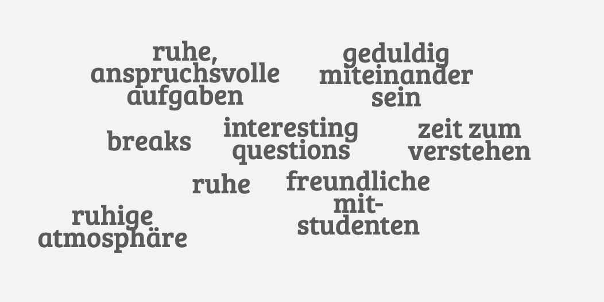

Advanced Geoscripting 2020¶
Heidelberg University | Institute of Geography | August 10th 2020
Christina Ludwig
- data-y
r1000
Agenda¶
Welcome: Introduction round
- Course Organization
Learning goals
Collaborative Learning
Time Schedule
Advanced Vector Data Processing in Python
Learning Goals¶
By the end of the course you will be able to …
-
class
substep¶ … know and use state-of-the-art python packages for geodata processing,
… make (interactive) graphs and maps in Python,
… describe the components of a computer and explain how they affect your program,
… optimise your program for efficiency,
… write a well structured, readable and documented program,
… use git to keep track of all your changes during the development process,
… test your program to ensure correct and reproducible results.
… keep teaching yourself programming.
Disclaimer¶
After this course, you won’t know everything you need about Geodata Processing using Python.
-
class
substep It’s a never ending process and the only way to improve is: practice, practice, practice, …
→ During the course we will learn to understand new concepts.
→ During but mostly after the course you will practice applying them.
You are responsible for your own learning progress¶
-
class
substep I will help you learn, but what you make out of it is your responsibility.
Be proactive, don’t just wait for me to keep you busy.
Be curious and find tasks on you are interested in!
→ Ask questions!
→ Answer questions! (Explaining things to others is a great way of learning.)
→ Help each other!
→ Give me feedback!
What do need for a good (collaborative) learning environment?¶
→ Please answer at https://answergarden.ch/970708
{kind=link}
Pair Programming¶

Driver: Is typing and explaining what they’re doing. (shares screen)
Navigator: Is watching and looking out for typos, bugs, etc.
→ Switch every once in a while.
Professional software development method and very good for learning programming
How to deal with problems during programming?¶
Refer to online resources: documentation, forums, etc.
Ask other students, e.g. post question in MS Teams channel.
Ask instructor. (If it is not urgent, we can answer them together at the end of the day)
Time Schedule¶
TIME |
DAY 1 |
DAY 2 |
DAY 3 |
DAY 4 |
DAY 5 |
|---|---|---|---|---|---|
9:15 - 9:45 |
Introduction |
Questions |
Questions |
Questions |
Questions |
9:45 - 10:30 |
Advanced Vector Processing |
Vectorized Data Processing |
Best Practice Scientific Programming |
Geodata Visualization |
Code Review / Assignments |
10:30 - 12:00 |
Assignment 1: Vector |
Assignment 2: Raster |
Assignments |
Assignments |
Wrap-up |
12:00 - 13:00 |
Lunch |
break |
whenever |
you want |
|
13:00 - 14:00 |
Assignment 1: Vector |
Assignment 2: Raster |
Assignments |
Group Assignment |
|
14:00 - 15:00 |
Questions & Summary |
Questions & Summary |
Questions & Summary |
Questions & Summary |
Grading¶
50%: 2 assignments (+ group assignment) during the course
50%: Individual programming project (with peer-review)
Assignments and project must be submitted individually via GitHub Classroom, but you are encouraged to work together and help each other!